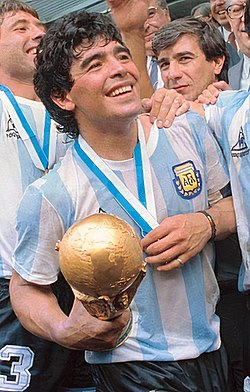

DIEGO ARMANDO MARADONA
LA LEYENDA

Nacido en Villa Fiorito, Maradona inició en los juveniles de Argentinos Juniors, donde fue máximo goleador durante cinco temporadas consecutivas. En 1981, fue transferido a Boca Juniors, logrando el Campeonato Metropolitano, su único título en Argentina. Tras el Mundial de 1982, se convirtió en el primer futbolista en lograr ser el transferido más caro del mundo en dos ocasiones: al Barcelona por 7,30 millones de euros y luego al Napoli por 12 millones. En Italia, llevó al Napoli a ganar dos campeonatos de la Serie A (1987 y 1990) y la Copa de la UEFA, título internacional único del club, y se convirtió en su máximo goleador histórico. Tras siete temporadas en Nápoles, en 1990 dio positivo por dopaje, y dejó Europa para jugar en Sevilla y en Newell’s Old Boys, para terminar regresando a Boca en 1995 y retirarse en 1997. Con la selección argentina, fue campeón del Mundial juvenil en 1979 y, como capitán, conquistó México 1986, destacándose por dos goles históricos contra Inglaterra: “la mano de Dios” y el “Gol del Siglo”. En Italia 1990, Argentina fue subcampeona del mundo. Tras una pausa por problemas de dopaje, regresó en 1994 para intentar ayudar en la clasificación al Mundial de Estados Unidos, pero dio positivo nuevamente por efedrina y fue expulsado, siendo su última participación en copas del mundo.
PERFIL DE JUGADOR

Descrito como un "clásico número 10" o "enganche" en los medios de comunicación, Maradona era un creador de juego tradicional que generalmente jugaba en un rol libre, ya sea como mediocampista ofensivo detrás de los delanteros o como segunda punta en un doble delantera, aunque también en ocasiones fue utilizado como un centrocampista con roles ofensivos en una formación 4-4-2 Maradona era conocido por su capacidad de regate, visión, control del balón, pases y creatividad, y se le considera uno de los jugadores más hábiles en este deporte. Tenía un físico compacto, y con sus piernas fuertes, bajo centro de gravedad y equilibrio, podía soportar bien la presión física de los rivales mientras corría con la pelota, a pesar de su pequeña estatura, mientras que su aceleración, pies rápidos y agilidad, combinados con sus habilidades de regate y control a la velocidad, le permitían cambiar de dirección rápidamente, lo que lo hacia difícil de defender para los oponentes.